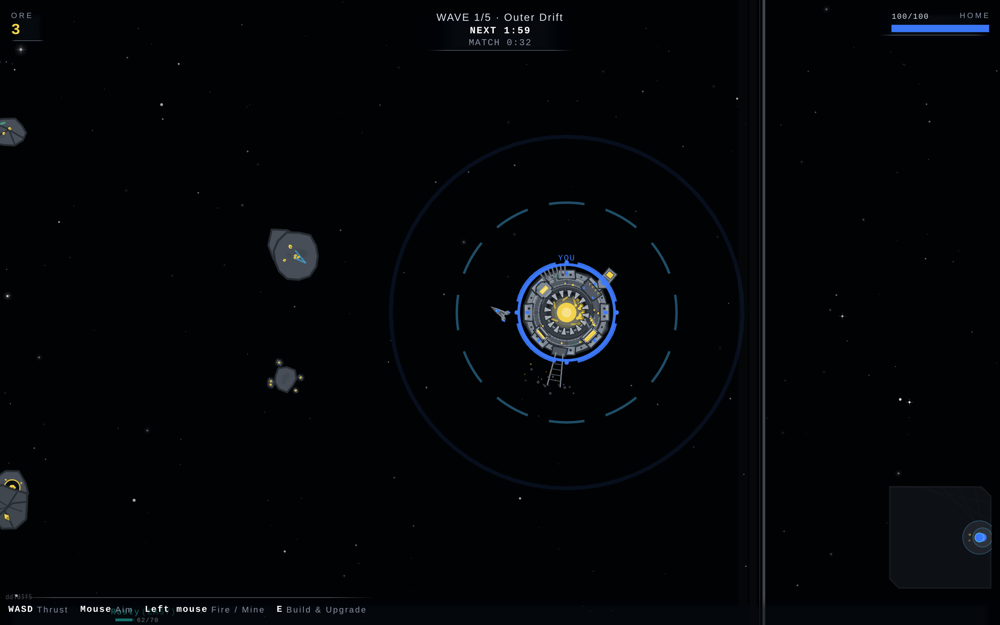
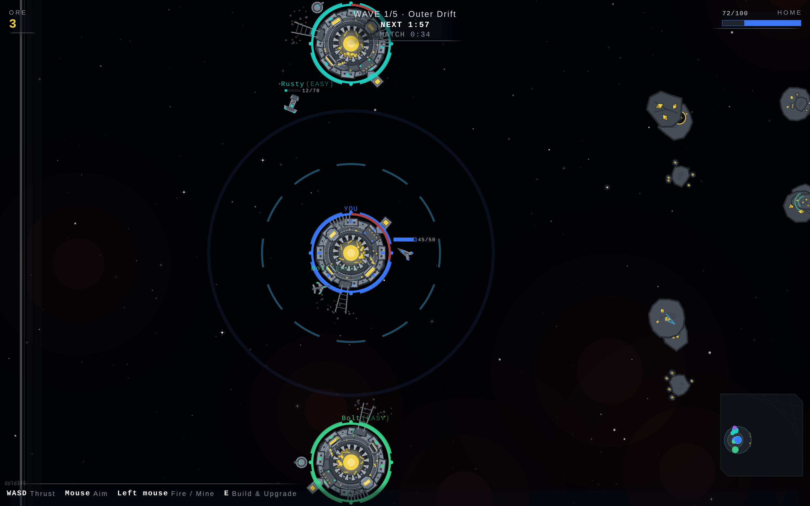

Served bundle dd1d3f5. Reading the sky twice on The Oval gave two different answers:
?debug=1&freeze=1 had void-nebula-plasmaReef on the stage, and a LIVE
?debug=1 boot of the same bundle had no nebula layer at all. Every other arena answered the
same both ways. This is why: Void.build() computes
density = reduced ? nebula.reducedDensity : 1 and then
drawSky = id !== 'none' && density > 0, and plasmaReef is the only sky whose
reducedDensity is 0 — coalsack 1, deepEmber 1, ironVeil 0.5, patinaDrift 0.45. When
VfxAutoQuality engages, the reef is the one sky that goes to nothing. Freeze never throttles
(flags.freeze ? false : vfxQuality.sample(...)), which is why the frozen frame still has it.
Each cell is one second of one arena's live boot:
a void-nebula-* layer is on the stage
it is not.
reducedDensity 0, the subjectreducedDensity 1, the control: same box, same load, same 40 s, a sky that must survive

What this is and is not. It is not a bug and not a registry fault: MAP_NEBULA.oval says
plasmaReef and the build loads plasmaReef. It is a consequence of the registry that the registry does not
state — on a throttled client The Oval flies under a bare star field, and it is the only arena of the
six for which that is true. The threshold is DEFAULT_VFX_QUALITY: smoothed fps at or under 30,
held 3 s. This box is nowhere near a real device — software WebGL running two contexts at once,
median 2 fps — so what is demonstrated here is the MECHANISM and which sky it takes,
not that any particular phone crosses that line. A device that never drops below 30 fps never sees this.